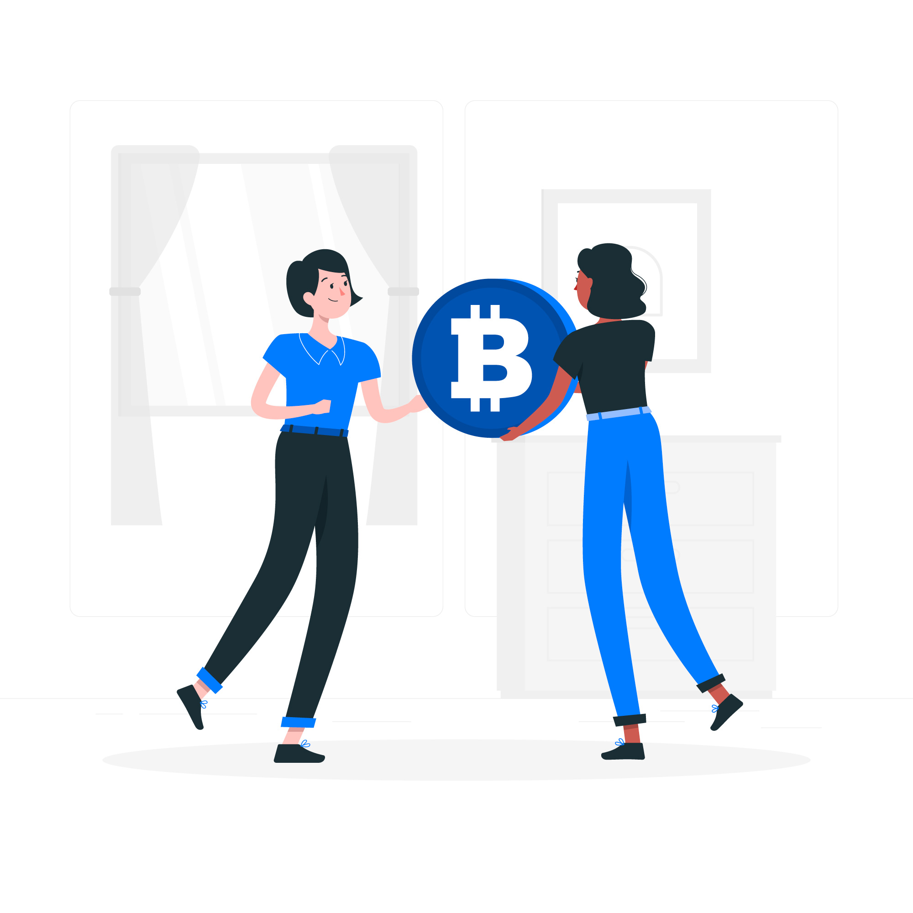
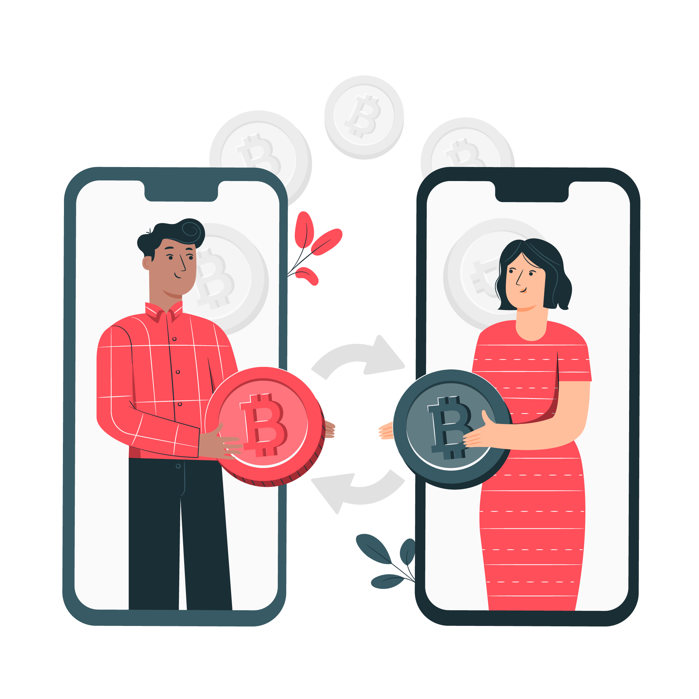

What is cryptocurrency
Cryptocurrency is a type of currency that’s digital and decentralized. Cryptocurrencies can be used to buy and sell things, and their potential to store and grow value has also caught the eye of many investors.
There are thousands of different cryptocurrencies available today. The most popular — and the original — is Bitcoin, which was created in 2009. Other common cryptocurrencies include Ethereum, XRP, and Bitcoin Cash. Each of these currencies serves a different purpose, with some optimized for use in place of cash, and others designed for private, direct transactions.

-
A cryptocurrency is a form of digital asset based on a network that is distributed across a large number of computers. This decentralized structure allows them to exist outside the control of governments and central authorities.
-
Blockchains, which are organizational methods for ensuring the integrity of transactional data, are an essential component of many cryptocurrencies.
-
Cryptocurrencies face criticism for a number of reasons, including their use for illegal activities, exchange rate volatility, and vulnerabilities of the infrastructure underlying them. However, they also have been praised for their portability, divisibility, inflation resistance, and transparency.
-
There is a limit to the number of units that can exist. E.g.: For Bitcoins, it is 21 million.
-
Easy to verify the transactions.
-
International transactions are faster.
-
Mainly based on decentralized computer networks.
Cryptocurrencies are wholly digital, so there’s no physical coin or bill connected to the crypto you own. Instead, owners hold cryptocurrency in a digital wallet, and buy or sell through an online exchange. Your wallet may be online (some popular exchanges like Coinbase offer an in-app wallet) or stored offline on a hardware device similar to a USB drive.
Decentralization is a primary tenet of cryptocurrency. Whereas most currencies are backed by a central bank — the U.S. dollar, for example, is backed by the “full faith and credit” of the U.S. government — cryptocurrencies are maintained and valued by their users.
Cryptocurrency transactions are recorded on a decentralized ledger. This ledger is called a blockchain. Every time crypto is bought or sold, the transaction is added to the blockchain — a public database of the transactions, which is available to other crypto holders. Anyone can join and participate in the blockchain, but data on individual transactions — and the people involved with them — are secured using cryptography (the basis for the term cryptocurrency). For each transaction added to the blockchain, there’s a digital validation process to verify it and prevent fraud.
Formal Defination
According to Jan Lansky, a cryptocurrency is a system that meets four conditions:
-
The system does not require a central authority; its state is maintained through distributed consensus.
-
The system keeps an overview of cryptocurrency units and their ownership.
-
The system allows transactions to be performed in which ownership of the cryptographic units is changed. A transaction statement can only be issued by an entity proving the current ownership of these units.
-
Ownership of cryptocurrency units can be proved exclusively cryptographically.
In March 2018, the word cryptocurrency was added to the Merriam-Webster Dictionary.
AltCoins
Tokens, cryptocurrencies, and other types of digital assets that are not bitcoin are collectively known as alternative cryptocurrencies, typically shortened to "altcoins" or "alt coins". Paul Vigna of The Wall Street Journal also described altcoins as "alternative versions of bitcoin" given its role as the model protocol for altcoin designers. The term is commonly used to describe coins and tokens created after bitcoin. A list of some cryptocurrencies can be found in the List of cryptocurrencies article.
Altcoins often have underlying differences with bitcoin. For example, Litecoin aims to process a block every 2.5 minutes, rather than bitcoin's 10 minutes, which allows Litecoin to confirm transactions faster than bitcoin. Another example is Ethereum, which has smart contract functionality that allows decentralized applications to be run on its blockchain. Ethereum was the most used blockchain in 2020, according to Bloomberg News.[31] In 2016, it had the largest "following" of any altcoin, according to the New York Times.
Crypto token
A blockchain account can provide functions other than making payments, for example in decentralized applications or smart contracts. (Units of) fungible tokens are sometimes referred to as crypto tokens (or cryptotokens). These terms are usually reserved for other fungible tokens than the main cryptocurrency of the blockchain, that is, usually, for fungible tokens issued within a smart contract running on top of a blockchain such as Ethereum.[35] There are also non-fungible tokens.
Architecture
Decentralized cryptocurrency is produced by the entire cryptocurrency system collectively, at a rate which is defined when the system is created and which is publicly known. In centralized banking and economic systems such as the Federal Reserve System, corporate boards or governments control the supply of currency by printing units of fiat money or demanding additions to digital banking ledgers. In the case of decentralized cryptocurrency, companies or governments cannot produce new units, and have not so far provided backing for other firms, banks or corporate entities which hold asset value measured in it. The underlying technical system upon which decentralized cryptocurrencies are based was created by the group or individual known as Satoshi Nakamoto.
As of May 2018, over 1,800 cryptocurrency specifications existed.[37] Within a proof-of-work cryptocurrency system such as Bitcoin, the safety, integrity and balance of ledgers is maintained by a community of mutually distrustful parties referred to as miners: who use their computers to help validate and timestamp transactions, adding them to the ledger in accordance with a particular timestamping scheme.[14] In a proof-of-stake (PoS) blockchain, transactions are validated by holders of the associated cryptocurrency, sometimes grouped together in stake pools.
Most cryptocurrencies are designed to gradually decrease the production of that currency, placing a cap on the total amount of that currency that will ever be in circulation. Compared with ordinary currencies held by financial institutions or kept as cash on hand, cryptocurrencies can be more difficult for seizure by law enforcement.
BlockChain
- Main Article : Blockchain
The validity of each cryptocurrency's coins is provided by a blockchain. A blockchain is a continuously growing list of records, called blocks, which are linked and secured using cryptography. Each block typically contains a hash pointer as a link to a previous block, a timestamp and transaction data. By design, blockchains are inherently resistant to modification of the data. It is "an open, distributed ledger that can record transactions between two parties efficiently and in a verifiable and permanent way". For use as a distributed ledger, a blockchain is typically managed by a peer-to-peer network collectively adhering to a protocol for validating new blocks. Once recorded, the data in any given block cannot be altered retroactively without the alteration of all subsequent blocks, which requires collusion of the network majority.
Node
In the world of Cryptocurrency, a node is a computer that connects to a cryptocurrency network. The node supports the relevant cryptocurrency's network through either; relaying transactions, validation or hosting a copy of the blockchain. In terms of relaying transactions each network computer (node) has a copy of the blockchain of the cryptocurrency it supports, when a transaction is made the node creating the transaction broadcasts details of the transaction using encryption to other nodes throughout the node network so that the transaction (and every other transaction) is known.
Node owners are either volunteers, those hosted by the organisation or body responsible for developing the cryptocurrency blockchain network technology or those that are enticed to host a node to receive rewards from hosting the node network.
Mining

In cryptocurrency networks, mining is a validation of transactions. For this effort, successful miners obtain new cryptocurrency as a reward. The reward decreases transaction fees by creating a complementary incentive to contribute to the processing power of the network. The rate of generating hashes, which validate any transaction, has been increased by the use of specialized machines such as FPGAs and ASICs running complex hashing algorithms like SHA-256 and scrypt. This arms race for cheaper-yet-efficient machines has existed since the day the first cryptocurrency, bitcoin, was introduced in 2009. With more people venturing into the world of virtual currency, generating hashes for this validation has become far more complex over the years, with miners having to invest large sums of money on employing multiple high performance ASICs. Thus the value of the currency obtained for finding a hash often does not justify the amount of money spent on setting up the machines, the cooling facilities to overcome the heat they produce, and the electricity required to run them. Favorite regions for mining include those with cheap electricity, a cold climate, and jurisdictions with clear and conducive regulations. As of July 2019, bitcoin's electricity consumption is estimated to about 7 gigawatts, 0.2% of the global total, or equivalent to that of Switzerland.
Some miners pool resources, sharing their processing power over a network to split the reward equally, according to the amount of work they contributed to the probability of finding a block. A "share" is awarded to members of the mining pool who present a valid partial proof-of-work.
As of February 2018, the Chinese Government halted trading of virtual currency, banned initial coin offerings and shut down mining. Many Chinese miners have since relocated to Canada and Texas. One company is operating data centers for mining operations at Canadian oil and gas field sites, due to low gas prices.[51] In June 2018, Hydro Quebec proposed to the provincial government to allocate 500 MW to crypto companies for mining. According to a February 2018 report from Fortune, Iceland has become a haven for cryptocurrency miners in part because of its cheap electricity.
Wallets
- Main Article : Cryptocurrency Walllet
A cryptocurrency wallet stores the public and private "keys" (address) or seed which can be used to receive or spend the cryptocurrency. With the private key, it is possible to write in the public ledger, effectively spending the associated cryptocurrency. With the public key, it is possible for others to send currency to the wallet.
There exist multiple methods of storing keys or seed in a wallet from using paper wallets which are traditional public, private or seed keys written on paper to using hardware wallets which are dedicated hardware to securely store your wallet information, using a digital wallet which is a computer with a software hosting your wallet information, hosting your wallet using an exchange where cryptocurrency is traded. or by storing your wallet information on a digital medium such as plaintext.
Anonymity
Bitcoin is pseudonymous rather than anonymous in that the cryptocurrency within a wallet is not tied to people, but rather to one or more specific keys (or "addresses"). Thereby, bitcoin owners are not identifiable, but all transactions are publicly available in the blockchain. Still, cryptocurrency exchanges are often required by law to collect the personal information of their users.
Economics
Cryptocurrencies are used primarily outside existing banking and governmental institutions and are exchanged over the Internet.
Block Rewards
Proof-of-work cryptocurrencies, such as bitcoin, offer block rewards incentives for miners. There has been an implicit belief that whether miners are paid by block rewards or transaction fees does not affect the security of the blockchain, but a study suggests that this may not be the case under certain circumstances.
The rewards paid to miners increase the supply of the cryptocurrency. By making sure that verifying transactions is a costly business, the integrity of the network can be preserved as long as benevolent nodes control a majority of computing power. The verification algorithm requires a lot of processing power, and thus electricity in order to make verification costly enough to accurately validate public blockchain. Not only do miners have to factor in the costs associated with expensive equipment necessary to stand a chance of solving a hash problem, they further must consider the significant amount of electrical power in search of the solution. Generally, the block rewards outweigh electricity and equipment costs, but this may not always be the case.
The current value, not the long-term value, of the cryptocurrency supports the reward scheme to incentivize miners to engage in costly mining activities. Some sources claim that the current bitcoin design is very inefficient, generating a welfare loss of 1.4% relative to an efficient cash system. The main source for this inefficiency is the large mining cost, which is estimated to be US$360 Million per year. This translates into users being willing to accept a cash system with an inflation rate of 230% before being better off using bitcoin as a means of payment. However, the efficiency of the bitcoin system can be significantly improved by optimizing the rate of coin creation and minimizing transaction fees. Another potential improvement is to eliminate inefficient mining activities by changing the consensus protocol altogether.
Transaction fees
Transaction fees for cryptocurrency depend mainly on the supply of network capacity at the time, versus the demand from the currency holder for a faster transaction. The currency holder can choose a specific transaction fee, while network entities process transactions in order of highest offered fee to lowest.
Cryptocurrency exchanges can simplify the process for currency holders by offering priority alternatives and thereby determine which fee will likely cause the transaction to be processed in the requested time.
For ether, transaction fees differ by computational complexity, bandwidth use, and storage needs, while bitcoin transaction fees differ by transaction size and whether the transaction uses SegWit. In September 2018, the median transaction fee for ether corresponded to $0.017, while for bitcoin it corresponded to $0.55.
Some cryptocurrencies have no transaction fees, and instead rely on client-side proof-of-work as the transaction prioritization and anti-spam mechanism.

Exchanges
- Main Article : Cryptocurrency exchange
Cryptocurrency exchanges allow customers to trade cryptocurrencies for other assets, such as conventional fiat money, or to trade between different digital currencies.
Atomic swaps
Atomic swaps are a mechanism where one cryptocurrency can be exchanged directly for another cryptocurrency, without the need for a trusted third party such as an exchange.
ATMs
Jordan Kelley, founder of Robocoin, launched the first bitcoin ATM in the United States on 20 February 2014. The kiosk installed in Austin, Texas, is similar to bank ATMs but has scanners to read government-issued identification such as a driver's license or a passport to confirm users' identities.
Initial coin offerings
An initial coin offering (ICO) is a controversial means of raising funds for a new cryptocurrency venture. An ICO may be used by startups with the intention of avoiding regulation. However, securities regulators in many jurisdictions, including in the U.S., and Canada, have indicated that if a coin or token is an "investment contract" (e.g., under the Howey test, i.e., an investment of money with a reasonable expectation of profit based significantly on the entrepreneurial or managerial efforts of others), it is a security and is subject to securities regulation. In an ICO campaign, a percentage of the cryptocurrency (usually in the form of "tokens") is sold to early backers of the project in exchange for legal tender or other cryptocurrencies, often bitcoin or ether.
According to PricewaterhouseCoopers, four of the 10 biggest proposed initial coin offerings have used Switzerland as a base, where they are frequently registered as non-profit foundations. The Swiss regulatory agency FINMA stated that it would take a "balanced approach" to ICO projects and would allow "legitimate innovators to navigate the regulatory landscape and so launch their projects in a way consistent with national laws protecting investors and the integrity of the financial system." In response to numerous requests by industry representatives, a legislative ICO working group began to issue legal guidelines in 2018, which are intended to remove uncertainty from cryptocurrency offerings and to establish sustainable business practices.